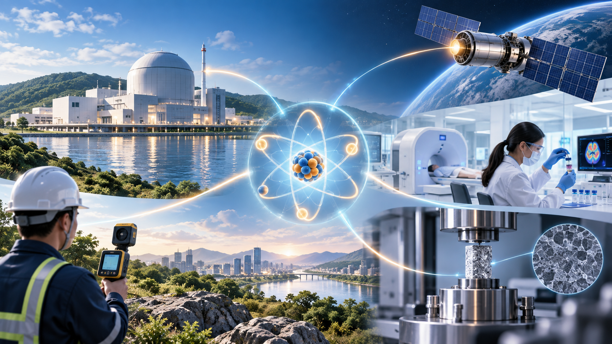
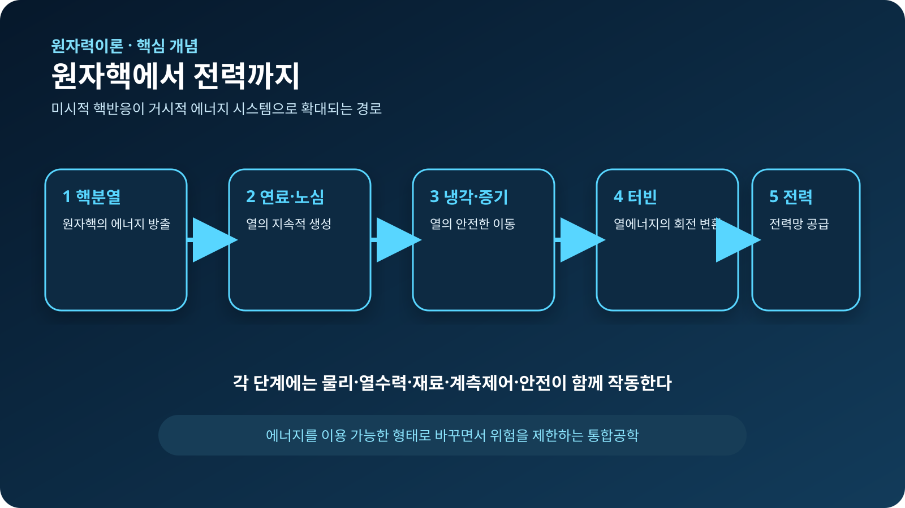
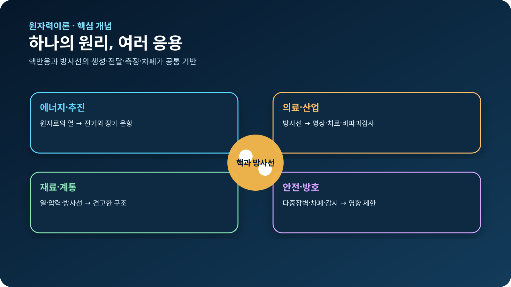

원자와 원자핵의 기초 · 001
원자력공학의 범위
원자핵에서 시작해 에너지·방사선·재료·안전을 연결하는 통합공학

핵심 개념
원자력공학은 원자력발전소만 다루는 학문이 아니라, 원자 수준의 현상을 유용한 기능으로 바꾸고 그 위험을 관리하는 통합공학입니다.
미시적 현상과 거시적 시스템의 연결
핵분열에서는 작은 원자핵 하나가 갈라지며 에너지를 방출합니다. 발전소에서는 이 사건이 수많은 원자핵에서 안정적으로 이어지고, 발생한 열이 냉각재와 증기계통을 거쳐 터빈을 돌리는 과정으로 확대됩니다. 따라서 원자로물리만으로는 발전소 전체를 설명할 수 없습니다. 열을 옮기는 열수력, 방사선 환경을 견디는 재료, 출력을 조절하는 계측제어, 비정상 상태에 대비하는 안전해석이 함께 작동해야 합니다.

병원·발전소·우주탐사의 공통 구조
병원의 방사성의약품, 발전소의 핵연료, 심우주 탐사선의 방사성동위원소 전원은 목적과 모습이 다릅니다. 그러나 모두 방사선 또는 핵반응의 발생원을 이해하고, 방출 에너지가 주변 물질과 어떻게 상호작용하는지 계산하며, 필요한 곳에는 에너지를 전달하고 불필요한 노출은 제한한다는 공통 구조를 가집니다.
| 연결 영역 | 핵심 기능 | 생활·산업 속 예시 |
|---|---|---|
| 에너지와 추진 | 핵반응의 열을 전기나 추진력으로 변환 | 원자력발전소, 장기간 운항 선박 |
| 방사선 이용 | 방사선과 물질의 상호작용을 측정·활용 | 의료영상, 방사선치료, 비파괴검사 |
| 재료와 계통 | 열·압력·방사선에 견디는 구조 설계 | 연료 피복관, 압력용기, 냉각계통 |
| 안전과 방호 | 이상 상태 예방과 영향 제한 | 다중장벽, 차폐, 방사선 감시 |
안전을 포함한 설계
원자력 분야에서 안전은 완성된 설비에 마지막으로 붙이는 부속 기능이 아닙니다. 방사선원의 양과 특성, 재료 열화, 냉각 능력, 계측기 오차와 운전원 대응을 처음부터 설계 조건에 포함합니다. 유용한 핵에너지와 방사선을 이용하면서 사람과 환경에 미치는 영향을 허용 범위 안으로 제한하는 것이 원자력공학의 중심 과제입니다.
